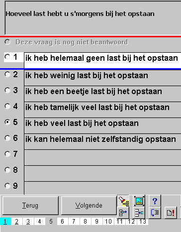
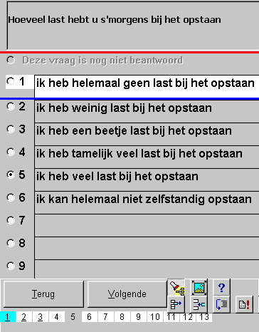

Patiënt Rapport & Groepsanalyse
Het rapport is afhankelijk van de behandelende discipline en de medische vraagstelling. Zie voor het aanmaken van nieuwe disciplines en vraagstellingen TestOrganizer.
Het rapport van een vragenlijst bestaat globaal uit 4 delen
Afhankelijk van het gewenste detail-nivo van het rapport worden sommige onderdelen wel of niet afgedrukt.
Bij vragenlijsten bestaat bovendien de mogelijkheid om de vragen en antwoorden in het rapport van een andere tekst te voorzien (rapportvorm) dan zoals de patient deze krijgt voorgeschoteld (patientvorm). Daarnaast zijn er een aantal voorzieningen om kolommen op een fraaie manier uit te lijnen.
|
Subschalen in rapport Via rechtermuisklik op de onderste balk, kan gekozen worden voor "vragenlijst instellingen". Via het tabblad "subschalen" kunnen enerzijds de subschalen en relatieve subschalen worden gedefiniëerd en anderzijds kan hier per subschaal of relatieve subschaal worden opgegegeven, voor welke combinatie van discipline en vraagstelling de betreffende (relatieve) subschaal in het rapport moet worden afgedrukt. |
|
|
Subschaal kolombreedte Bij de definities van de normen, kan de breedte van de kolommen van de subschalen worden gedefiniëerd, zoals deze worden gebruikt in het rapport. Hieronder een rapport voorbeeld voor de subschalen
en voor de relatieve subschalen
|
|
|
(Expliciet gemarkeerde) vragen in het rapport Rechts een voorbeeld, hoe een blokvraag eruit kan zien. Linksonder de tekst zoals die aan de patient wordt voorgelegd en rechtsonder de tekst zoals die in rapport wordt opgenomen. De rapportvorm is herkenbaar aan de lichtblauwe band onderaan. Door een dubbele punt ":" achter een vraag te zetten, wordt in de rapportvorm het antwoord achter de vraag geplaatst. LET OP, bij een blokvraag is niet de tekst in het bovenste hok de vraag, maar iedere regel in de hokken daaronder. Door het invoegen van het juiste aantal tabs, kunnen de antwoorden zelfs worden uitgelijnd. Omdat het beeldscherm en het rapport gebruik maken van verschillende fonts, vergt het uitlijnen van een kolom wat uitprobeer werk. |
Een handig hulpmiddel voor het uitlijnen is om even een extra vraag toe te voegen met de volgende tekst (zonder de hier getoonde spaties): "X <tab> X <tab> X <tab> X <tab> X" |
|
|
|
Hieronder nog een voorbeeld van de "patientvorm" en de "rapportvorm" bij een meerkeuze/1-antwoord vraag.
Het mag duidelijk zijn dat de dubbel punt ":" die het antwoord achter vraag plaatst nu wel in het bovenste hok komt !!
|
 |
|
Middels export kan een tabel van een bepaalde test worden aangemaakt.
De tabel is een zogenaamde "tab-delimited" bestand, dat door alle moderne windows programma's kan worden gelezen.
patnr: het eerste patientnummer (tevens sleutel in de patienten database)
Rnr: het tweede patientnummer (in deze documentatie vaak genoemd "Researchnummer".
Alle datums worden op meerdere manieren uitgevoerd, omdat SPSS niet in staat is goed om te gaan met datums.
gebdag : geboortedatum in de ingestelde windows notatie
gebdat1: het dagnummer
gebdat2: het maandnummer
gebdat3: het jaartal
gebdat4: het aantal dagen verstreken vanaf 1-1-1900
|
Subschaal scores Na de algemene testgegevens, wordt bij vragenlijsten worden eerst de scores op de subschalen vermeld. Voor de namen van de kolommen wordt gebruikt gemaakt van de afkorting van een subschaal. Hierbij worden de scores op de subschalen zowel absoluut als relatief (de kolom eindigend op '%') vermeld, zoals hier rechts wordt getoond. |
|
Vervolgens worden de antwoorden op de individuele vragen vermeld.
Hierbij worden de volgende speciale waarden gebruikt
-1 = niet beantwoord
-2 = niet relevant (overgeslagen)
© Copyright Instrumentele Dienst, 1999-2004